Tabs
Unsaved tabs survive a restart
Close Jester with unsaved or Untitled tabs and they come back with their text on the next start, marked with an asterisk.
The session is written as you type, so a crash or a shutdown keeps them too.
A fast notepad for Windows, in purple and gold. One portable file: download it and start typing.
Windows 10 and 11, 64-bit. Nothing to install.
If Windows says it protected your PC, click More info, then Run anyway.
Jester runs on Windows. Open this page on your PC to download it.
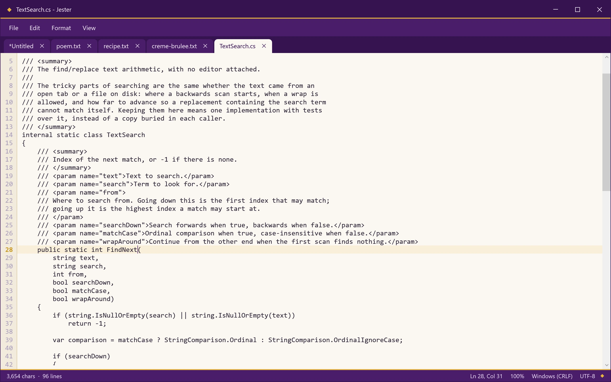
Tabs
Close Jester with unsaved or Untitled tabs and they come back with their text on the next start, marked with an asterisk.
The session is written as you type, so a crash or a shutdown keeps them too.
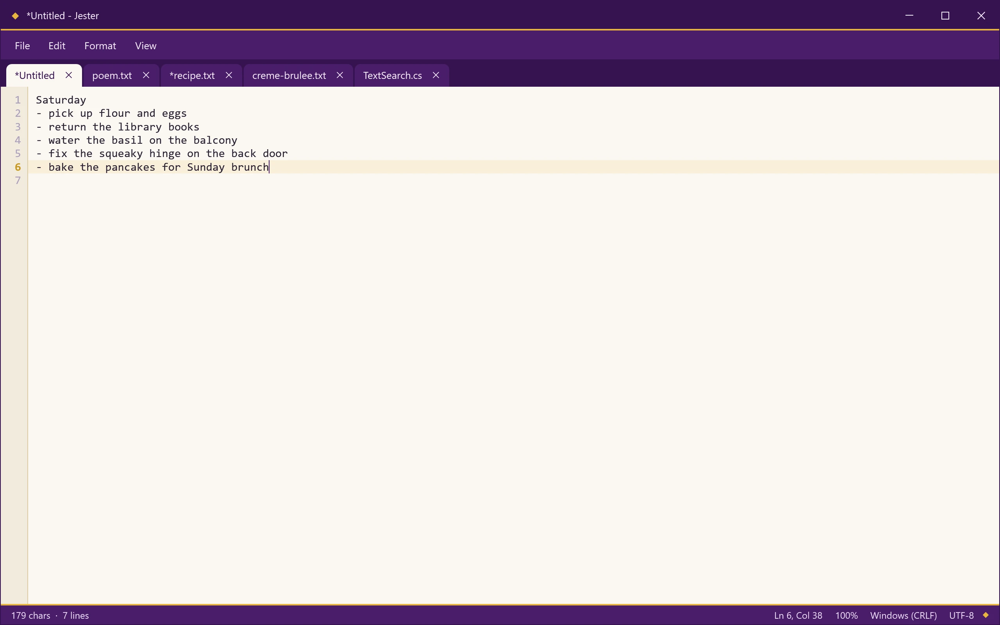
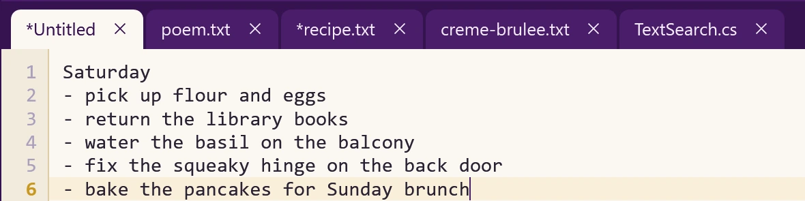
Replace
Find Next, Replace and Replace All, with match case, wrap around and a search direction. Replace All is one step that Undo takes back.
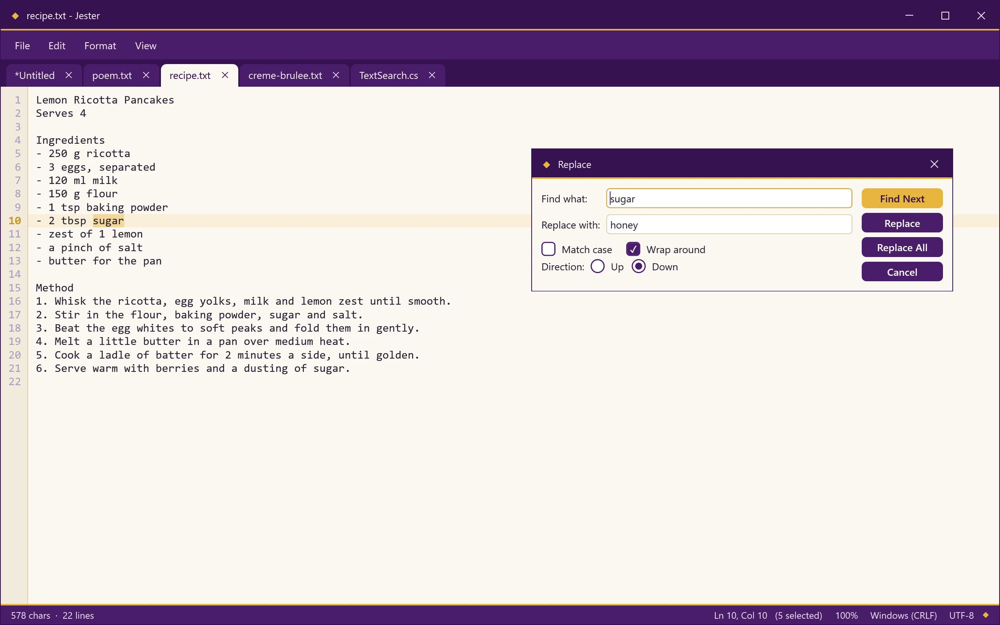
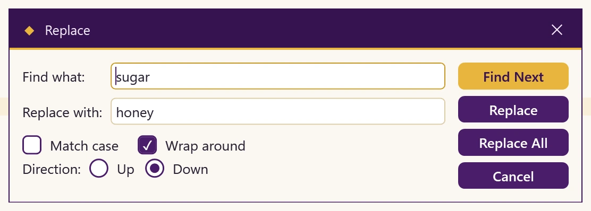
Search
Find in Files, Ctrl+Shift+F, searches a folder and its subfolders, with filters such as *.cs. Double-click a result to open the file at that line.
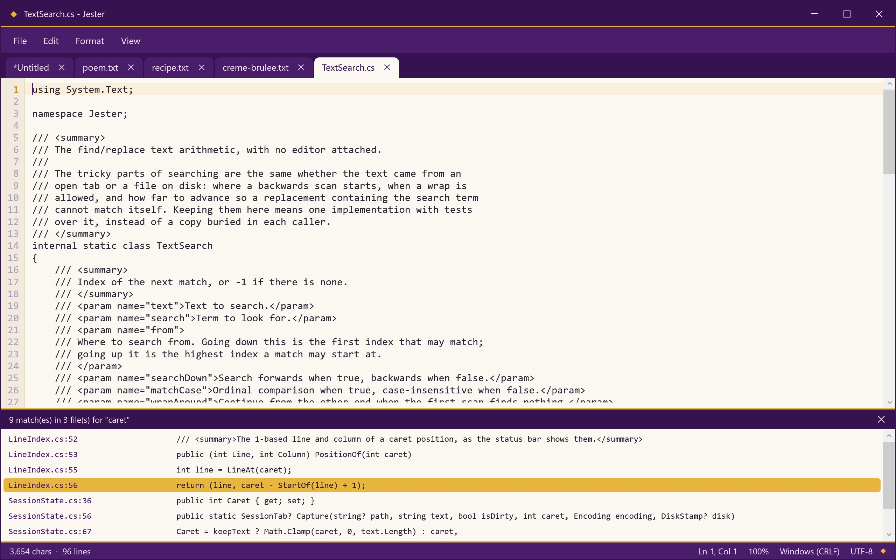
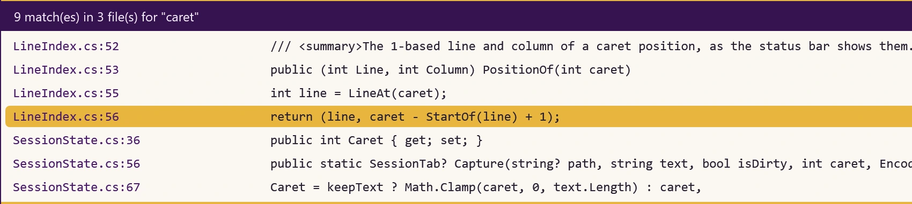
Encodings
Files open in the encoding they were saved in and are written back the same way, line endings included.
If a file still looks wrong, File, Reopen with Encoding reads it again in the encoding you pick.
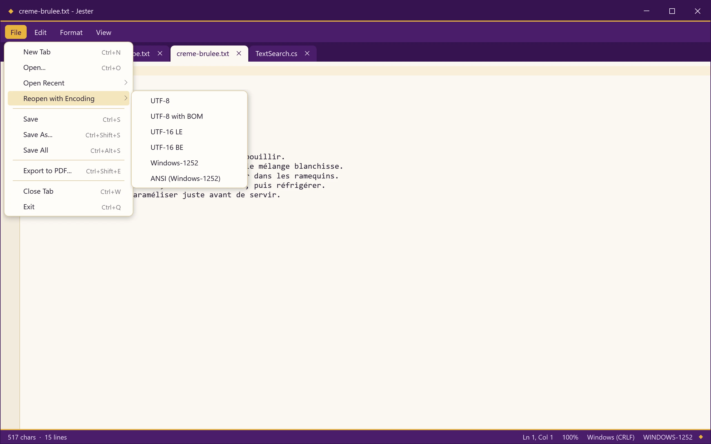
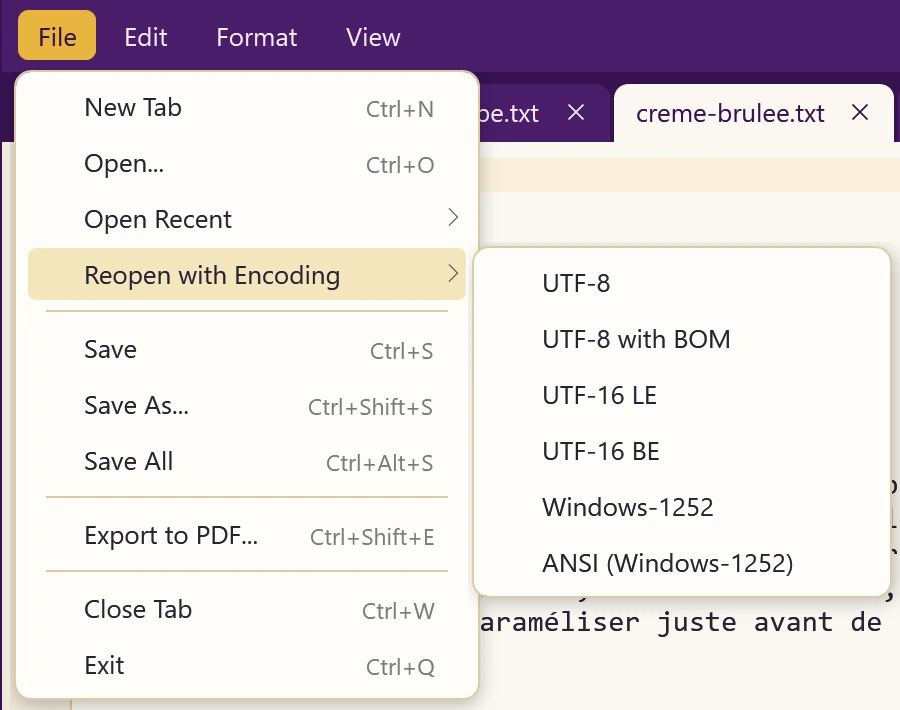
Format
The Format menu switches a tab between Windows, Unix and old Mac line endings, and between UTF-8, UTF-8 with BOM and UTF-16. Word wrap, auto indent and the font sit in the same menu.
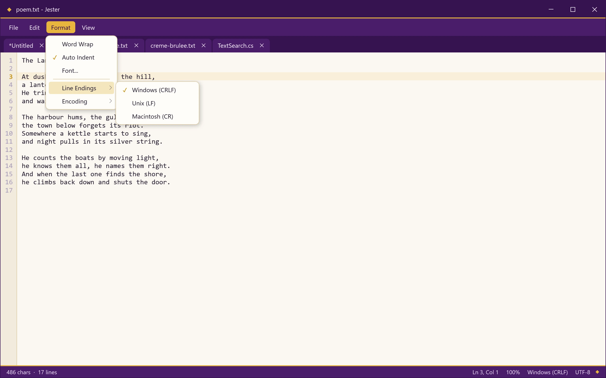
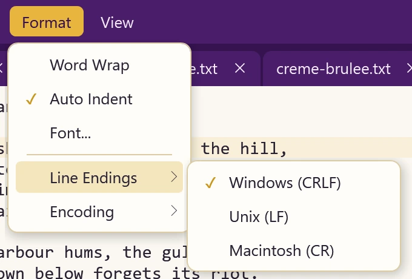
Jester has no network code and sends nothing anywhere. The only other program it starts is your PDF viewer, and only if you say yes after exporting a PDF.
Your settings, open tabs and the text of unsaved tabs live in %APPDATA%\Jester. Settings are saved a moment after each change, and the session as you type.
Download the new Jester.exe and put it in place of the old one. Your settings and tabs stay, because they live in %APPDATA%\Jester.
Close every Jester window, then delete Jester.exe and the %APPDATA%\Jester folder. Save unsaved tabs first; their text lives in that folder.
Yes. Jester is free software under the GNU GPL v3.0.
Jester is not signed with a paid certificate, so Windows warns about it the first time. Click More info, then Run anyway.
No. Jester.exe is one portable file with everything it needs inside. Double-click it, no admin rights needed.
In %APPDATA%\Jester: settings.json for your preferences and window, sessions for your open tabs, and crash.log only if something went wrong. Nothing is written next to the exe.
They come back with their text the next time you start it. Jester keeps unsaved and Untitled tabs as you type, so closing never asks you to save them.
Free for Windows 10 and 11. One file, nothing to install.